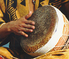

Hasan Bakr was born in 1955 in Savannah, Georgia. He was interested in sound and rhythm from his earliest childhood and is delighted watching his first born child, a two year old daughter, take joy in his music thereby repeating the cycle and developing the art.

Hasan Bakr found his first musical expression in the tonal arts of the drum. Later, he expanded this exploration to incorporate voice and the mbira. Bakr has a strong rhythmic approach to sound blending music from all parts of the world to create his uniquely contemporary sound. Aesthetic principles of clarity and patterns of rhythmic blending grow out of the traditions of African music. This music surges forth to modern times through the influence of the free-spirited avant-garde Jazz movement of the sixties and seventies. It reflects the essence of modern life now, here, in New York where he guards traditions of his ancestry and allows them to influence his new music.
Kevin Nathaniel and Hasan Bakr performing to a night crowd outdoors in Aleppo during their 1997 tour of syria
Bakr's musical education was essentially in the traditions of the master and student. He studied with Baba Feami Akinlana on conga, and Chief Bey on shekere. In 1984 he did an apprenticeship with Nana Vasconcelos to study the berimbau and body percussion. Hasan's most recent concentration has been the timbales with the legendary Little Ray Romero. Over the past five years Hasan has nurtured and molded a dynamic and unique vocal ability which is apparent in the recently published video tape of the Kinetic Painting Group.
Hasan Bakr is a founding member of the Spirit Ensemble, a group who pioneered the use of the mbira on the East Coast of North America. This association of kindred spirits has become the creative environment for Hasan to mature as a composer. As a result he has produced a number of performance works which range from dance to the media arts. The Spirit ensemble is now known as the Heritage Ensemble.
Hasan Bakr has performed for Amsterdam Public Television and widely in the U.S. for educational and entertainment institutions. He has published several tapes and a CD.
PUBLISHED WORK
If you wish to know more about Hasan Bakr or the Heritage Ensemble send email to heritageop@msn.com or click -» HERE
To request permission to reproduce any part of these words or pictures please click -» HERE
Copyright, Samia A. Halaby, 1998, All rights reserved.
Chapter I ... Grandmother, ... Chapter II ... Beisan, ... Chapter III ... Jerusalem, ... Chapter IV ... Sabah, ... Chapter V ... Yafa, ... Chapter VI ... Khader, ... Chapter VII ... Vera, ... Chapter VIII ... Students, ... Chapter IX ... Taxi, ... Chapter X ... Doctor, ... Chapter XI ... Hasan, ...

![[Art on the Net]](/images/artnet_button.gif)
![[Gallery]](/images/gallery_button.gif)
![[Studios]](/images/studios_button.gif)
![[What's New]](/images/whats_new_button.gif)